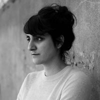

Aisha Zia
Writer
 Aisha Zia is a writer and producer based in London. She worked with Common Wealth on her first full-length play An Indecent Incident, produced in London. She went on to complete her second full-length play, The Fox and the Libertine, gaining a distinction on her MA in Creative Writing at City University. Aisha was included in the 'Ave It' writers line up at the Old Vic Tunnels for the Coming Up Later Festival sponsored by Ideas Tap. She has worked as a researcher to Colin Teevan, an Intern at HighTide, and completed the Critical Mass Artist Development Program at the Royal Court. Her first short film documentary Ridley Road was part of the East End Film Festival in 2011. Aisha worked as a writer on Our Glass House.